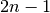
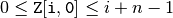
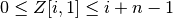
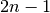
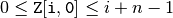
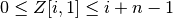

scipy.cluster.hierarchy.is_valid_linkage¶
- scipy.cluster.hierarchy.is_valid_linkage(Z, warning=False, throw=False, name=None)[source]¶
Checks the validity of a linkage matrix.
A linkage matrix is valid if it is a two dimensional ndarray (type double) with
 rows and 4 columns. The first two columns must contain indices
between 0 and . For a given row i,

and 
(i.e. a cluster cannot join another cluster unless the cluster
being joined has been generated.)
rows and 4 columns. The first two columns must contain indices
between 0 and . For a given row i,

and 
(i.e. a cluster cannot join another cluster unless the cluster
being joined has been generated.)Parameters : Z : array_like
Linkage matrix.
warning : bool, optional
When True, issues a Python warning if the linkage matrix passed is invalid.
throw : bool, optional
When True, throws a Python exception if the linkage matrix passed is invalid.
name : str, optional
This string refers to the variable name of the invalid linkage matrix.
Returns : b : bool
True iff the inconsistency matrix is valid.